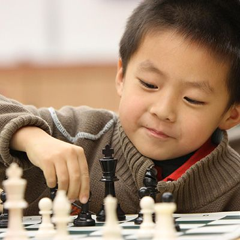

Особые ходы
Существует два особых хода: Рокировка — если король и одна из ладей того же цвета не двигались с начала игры, то король и эта ладья могут в один ход одновременно сменить положение (рокироваться). При рокировке король сдвигается на две клетки по направлению к ладье, а ладья ставится на поле между начальной и конечной позицией короля. Рокировка невозможна, если король или соответствующая ладья уже ходили. Рокировка временно невозможна, если между королём и ладьёй находится какая-либо фигура, а также если поле, на котором стоит король, или поле, которое он должен пересечь, или поле, которое он должен занять, находится под ударом одной из фигур противника. Для целей правила «тронул — ходи» рокировка считается ходом короля, поэтому рокировку следует начинать с перестановки короля, а не ладьи.
Взятие на проходе — когда пешка совершает ход на две клетки через битое поле, находящееся под ударом пешки противника, то ответным ходом она может быть взята этой пешкой противника. При этом пешка противника перемещается на битое поле, а взятая пешка снимается с доски (пример см. на диаграмме). Взятие на проходе возможно только непосредственно в ответ на ход пешки через битое поле, на следующих ходах оно уже не разрешено.
Шах, и Мат, и Пат
Король, находящийся на битом поле, называется «стоящим под шахом». Сделать ход, после которого король противника оказывается под шахом, значит «объявить шах». Ходы, после которых король сделавшего ход остаётся или оказывается под шахом, запрещены; игрок, король которого находится под шахом, обязан немедленно его устранить.
Если король игрока находится под шахом и игрок не имеет ни одного хода, позволяющего устранить этот шах, этот игрок называется «получившим мат» и, соответственно, он терпит поражение. Цель игры и состоит в том, чтобы поставить мат королю противника.
Если игрок при своей очереди хода не имеет возможности сделать ни одного хода по правилам, но король игрока не находится под шахом, такая ситуация называется пат.
Китайцы и Интеллектуальные игры

©Лужецкий Владислав Константинович